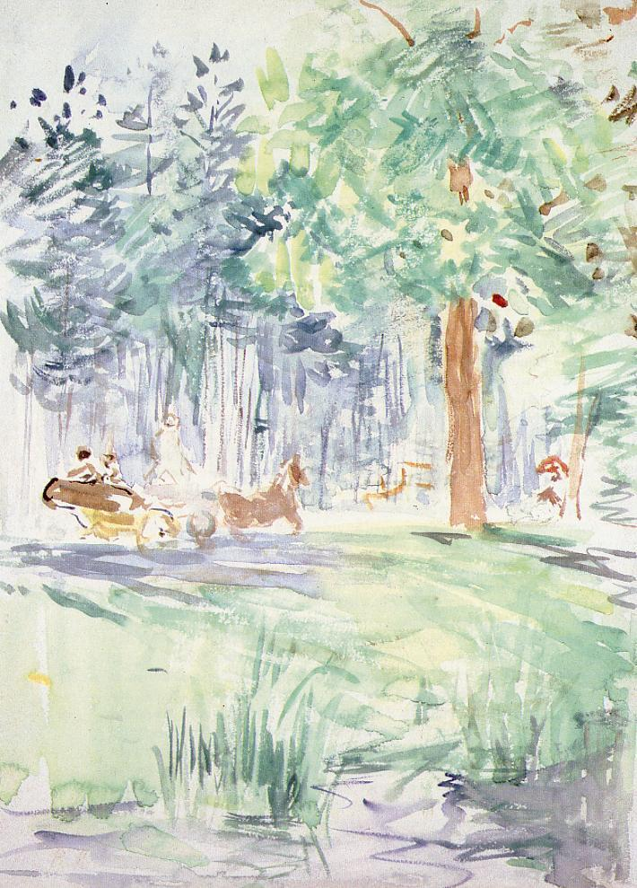

Tags: roads-and-vehicles, forests-and-trees
Style: Impressionism
Artist: Morisot Berthe
Title: Carriage in the Bois de Boulogne
Year: 1889
Genre: landscape
Categories: African_crocodile (12.4%); lakeside (9.2%); American_alligator (8.3%); hippopotamus (3.9%); coyote (3.5%)
Similar Images: